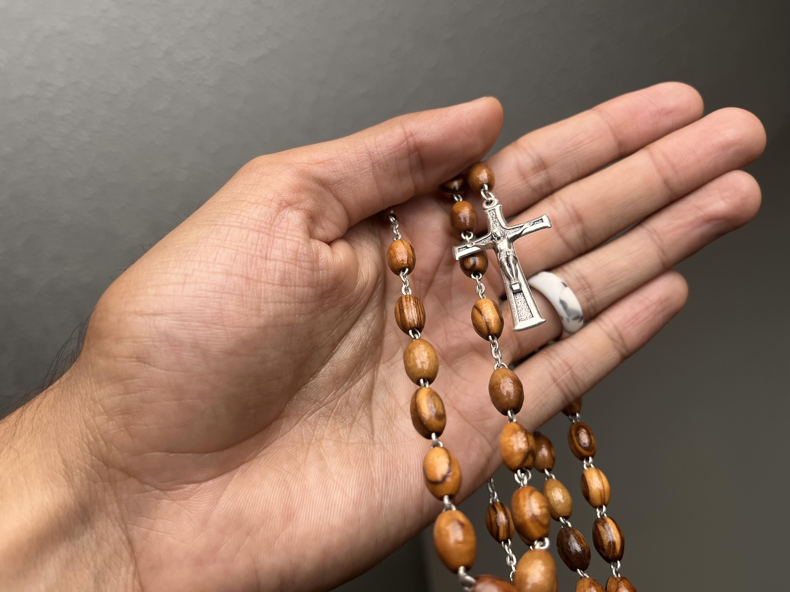

Prayers of the Rosary
The Holy Trinity
In the name of the Father, and of the Son, and of the Holy Spirit. Amen.
The Apostle's Creed
I believe in God the Father almighty, Creator of Heaven and earth. And in Jesus Christ his only Son our Lord, who was conceived by the Holy Spirit, born of the Virgin Mary, suffered under Pontius Pilate; was crucified, died and was buried. He descended into hell. The third day He rose again from the dead. He ascended into heaven, and sits at the right hand of God the Father almighty. He shall come again to judge the living and the dead. I believe in the Holy Spirit, the holy Catholic Church, the communion of saints, the forgiveness of sins, the resurrection of the body, and life everlasting. Amen.
The Lord's Prayer
Our Father, who art in heaven, hallowed be thy name. Thy kingdom come, thy will be done, on earth as it is in Heaven. Give us this day our daily bread, and forgive us our trespasses, as we forgive those who trespass against us, and lead us not into temptation but deliver us from evil, for thine is the kingdom, the power, and the glory, now and forever. Amen.
The Hail Mary
Hail Mary, full of grace, the Lord is with thee. Blessed are thou amongst women, and blessed is the fruit of thy womb Jesus. Holy Mary, Mother of God, pray for us sinners, now and at the hour of our death. Amen.
The Glory Be
Glory be to the Father, and to the Son, and to the Holy Spirit. As it was in the beginning is now and ever shall be, world without end. Amen.
Oh My Jesus
Oh my Jesus, forgive us our sins. Save us from the fires of hell. Lead all souls to heaven, especially those in most need of Thy mercy. Amen.
Hail Holy Queen
Hail Holy Queen, mother of mercy; our life, our sweetness, and our hope. To thee do we cry, poor banished children of Eve. To thee do we send up our sighs, mourning and weeping in this vale of tears. Turn then most gracious advocate, thine eyes of mercy toward us. And after this, our exile, show unto us the blessed fruit of thy womb, Jesus. O clement, O loving, O sweet Virgin Mary. Pray for us. O holy Mother of God, that we may be made worthy of the promises of Christ. Amen.
The Closing Prayer
O God, whose only-begotten Son by His life, death, and resurrection has purchased for us the rewards of eternal life; grant we beseech Thee, that by meditating upon these mysteries of the Most Holy Rosary of the Blessed Virgin Mary, we may imitate what they contain and obtain what they promise, through the same Christ our Lord. Amen.

Bible Passages
Psalm 23
The Lord is my Shephard, I shall not want.
He makes me to lie down in green pastures,
He leads me beside the still waters.
He restoreth my soul.
He leads me in paths of righteousness,
For His name sake.
Ye though I walk through the valley of the shadow of death,
I shall fear no evil, for You are with me.
Your rod and your staff, they comfort me.
You prepare a table before me in the presence od my enemies.
You anoint my head with oil.
My cup overfloweth.
Surely goodness and mercy shall follow me,
All the days of my life,
And I shall dwell in the house of the Lord,
Forever.
Psalm 51
Have mercy on me, O God,
According to your lovingkindness;
According to the multitude of your tender mercies,
Blot out my transgressions,
Wash me thoroughly from my iniquity,
And cleanse me from my sin.
For I acknowledge my transgressions,
And my sin is always before me.
Against you only have I sinned,
And done this evil in Your sight.
That you may be found just when You speak,
And blameless when You judge.
Behold, I was brought forth in iniquity,
And in sin my mother conceived me.
Behold you desire truth in the inward parts,
And in the hidden part you will make me to know wisdom.
Purge me with hyssop, and I shall be clean;
Wash me, and I shall be whiter than snow.
Make me hear joy and gladness,
That the bones you have broken may rejoice.
Hide Your face from my sins,
And blot out all my iniquities.
Create in my a clean heart, O God,
And renew a steadfast spirit within me.
Do not cast me away from Your presence,
And do not take Your Holy Spirit from me.
Restore to me the joy of Your salvation,
And uphold by Your generous Spirit.
Then I will teach transgressors Your ways,
And sinners shall be converted to You.
Deliver me from the guilt of bloodshed, O God,
The God of my salvation,
And my tongue shall sing aloud of Your righteousness.
O Lord, open my lips,
And my mouth shall show forth Your praise.
For you do not desire sacrifice, or else I would give it;
You do not delight in burnt offering.
The sacrifices of God are a broken spirit,
A broken and contrite heart—
These O God, You will not despise.
Do good in Your good to pleasure Zion;
Build the walls of Jerusalem.
Then you shall be pleased with the sacrifices of righteousness,
With burnt offering and whole burnt offering;
Then they shall offer bulls on Your altar.